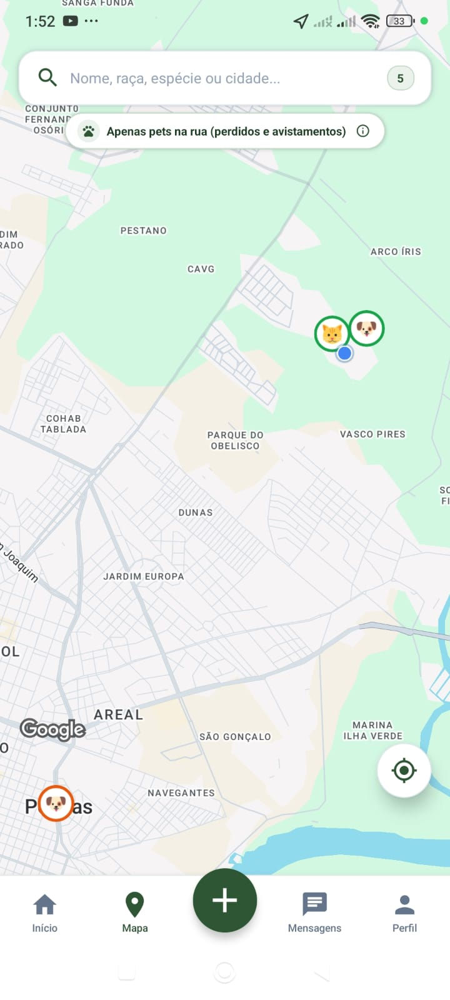
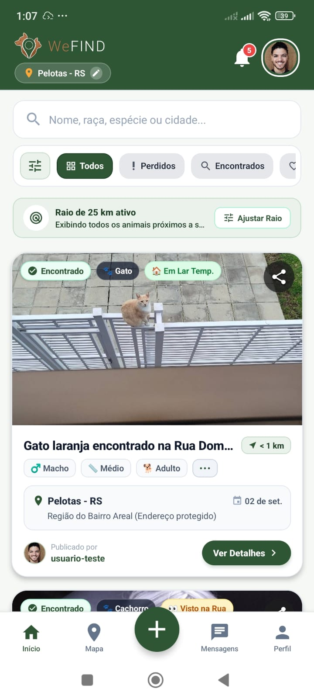

Encontre ocorrências
Pesquise animais perdidos, encontrados e disponíveis para adoção.
Uma rede para cuidar e reencontrar
O WeFIND conecta tutores e pessoas dispostas a ajudar na busca por animais perdidos ou encontrados, reunindo informações, localização e relatos em um só lugar.
Aplicativo para Android · Download gratuito · v2.0

Como funciona
O WeFIND foi pensado para transformar a mobilização da comunidade em uma busca mais clara e coordenada.
Pesquise animais perdidos, encontrados e disponíveis para adoção.
Use o mapa, o raio de busca e filtros por espécie, status e porte.
Compartilhe pistas, registre avistamentos e mantenha o tutor informado.
Recursos do WeFIND
Do primeiro cadastro ao reencontro, o aplicativo reúne ferramentas para tutores, pessoas que encontram animais e toda a comunidade.
Consulte publicações com busca por nome, raça, espécie ou cidade e filtre por situação, categoria, porte e distância.
Visualize animais próximos, selecione pontos no mapa, confira detalhes do local e trace uma rota até a ocorrência.
Cadastre casos perdidos, encontrados ou para adoção com fotos, características, localização e informações do tutor.
Use “Vi esse Pet” para informar onde o animal foi visto, adicionar observações, localização e, quando necessário, uma foto.
Gere e compartilhe um cartaz com foto, dados da ocorrência e QR Code para ampliar a divulgação nas redes.
Cadastre seus pets, registre cuidados e vacinas e tenha uma identificação digital com QR Code para facilitar a identificação.
Converse com outras pessoas sobre uma ocorrência sem expor seu número de telefone e acompanhe as notificações.
Acompanhe reencontros, participe da rede de ajuda, compartilhe histórias e fortaleça a colaboração local.
Atualize o status da publicação quando o animal for localizado e mantenha o histórico da ocorrência organizado.
Encontre animais disponíveis para adoção ou divulgue situações que precisam de acolhimento e lar temporário.

Tudo em um só lugar
Encontre uma ocorrência, veja os detalhes do animal, compartilhe um cartaz, envie uma pista ou converse com quem está acompanhando o caso. O feed organiza cada etapa da busca.
Baixar aplicativoInstalação
Como o aplicativo ainda não está na Google Play Store, o Android pode solicitar uma confirmação adicional durante a instalação.
Toque em “Baixar arquivo” nesta página.
Abra o arquivo ZIP e extraia o arquivo wefind.apk para a pasta Downloads.
Abra o APK extraído. Se o Android bloquear a instalação, ative “Permitir desta fonte” nas Configurações.
Leia o aviso do Play Protect, prossiga se confiar na origem e conceda as permissões solicitadas.
Acesso para avaliação
Para conhecer o aplicativo sem precisar fazer um cadastro, utilize os dados abaixo:
Se o formulário exigir e-mail, use o e-mail alternativo. Você também pode criar uma conta própria pelo botão “Cadastre-se”.

Guia de instalação
Veja o passo a passo completo, incluindo o aviso do Play Protect e as permissões necessárias para usar o mapa.
Ver instruções completas